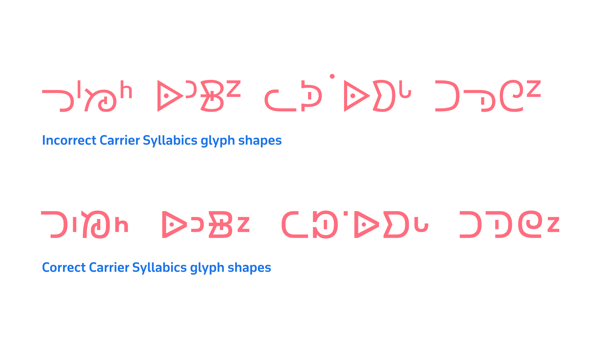
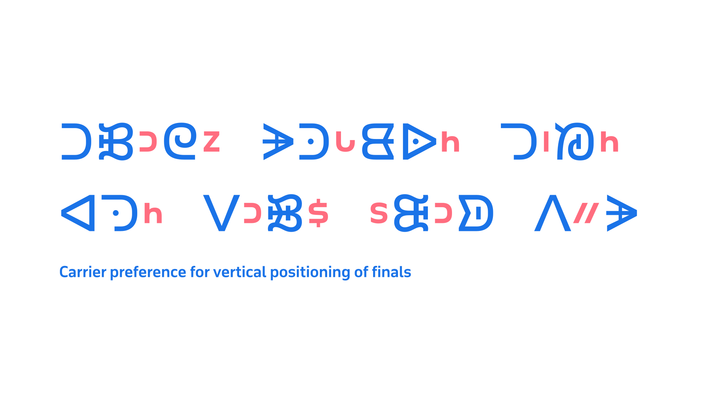
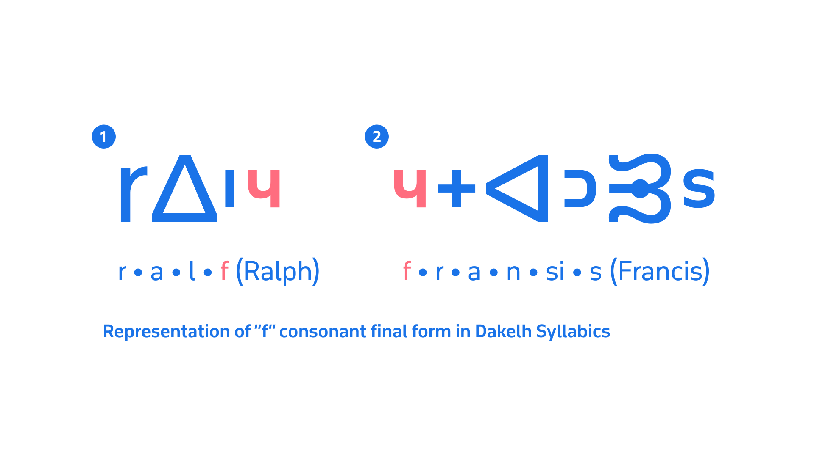
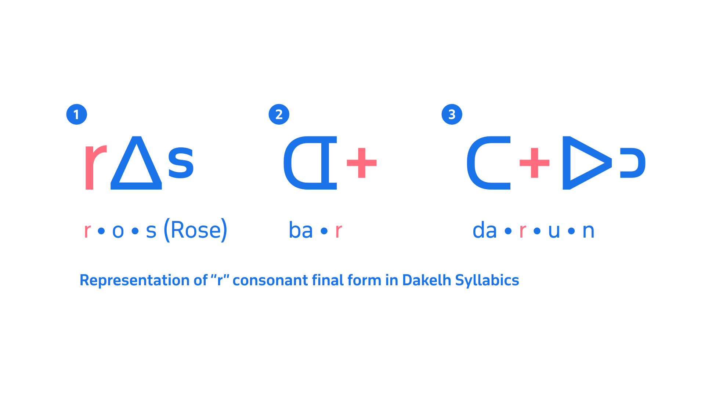

Dakelh (Carrier) Syllabics
By Kevin King · Google Fonts Knowledge.
Reviewed by Elliot Jay Stocks, Peter Biľak.
Original article · Source on GitHub · CC BY-SA 4.0. Text, illustrations and existing credits reproduced from the licensed Knowledge repository. Open Shelf adapted the layout and links; these adaptations are also CC BY-SA 4.0. No endorsement implied.
The Dakelh (Carrier) Syllabics—while graphically very distinct from all of the other Indigenous languages that use Syllabics orthographies—are stylistically linked to the typographic appearance of the square form style, which connects Dakelh visually with the Dene Syllabics and the orthographies within that group. As a result, the Dakelh Syllabics syllable characters are all expected to appear at a uniform height, without variation in between full- and medium-height characters, as is seen in the Algonquian and Inuktut Syllabics orthographies.
Although multiple version of the system exist, the orthography developed by Alexander and Morice remains the model preferred today by all of the communities with the Dakelh (Carrier) Nation, with the syllabic and finals characters and the correct orientations depicted in their charts as the standard.
The Typotheque Syllabics project worked with Dakelh community members and language experts Francois Prince and Dennis Cumberland in order to correct errors in the representative glyphs for the Dakelh Syllabics in the UCAS code charts. While this effort successfully corrects the Dakelh Syllabics character appearances at the text standards level, there are still preferences in terms of Dakelh Syllabics typography that require additional accommodation in the Typotheque November and Lava Syllabics fonts.
Preferred glyph shapes
The Dakelh Syllabics prefer all syllabic characters to be of a uniform height (for all syllabic characters to reach the topline, with no variation in medium-height characters) and all finals characters to be vertically positioned at the midline. Having the finals placed at the midline is a stylistically based requirement; however, this does also aid in the readability of Dakelh Syllabics texts and the ease of legibility for word images.

The above example on line one shows incorrect Carrier Syllabics forms, as rendered in Google’s Noto Sans Canadian Aboriginal Syllabics. The second line shows the correct glyph shapes for these characters, rendered in November Syllabics.
In addition to the preferences noted above, Dakelh users have a preference for the contemporary design of certain finals characters, particularly ᑋ ᔆ ᘁ ᙆ . Historically, these characters were rendered as serifed, Latin-script form characters, which intentionally appeared distinct from other Syllabics finals characters. Francois Prince and Dennis Cumberland confirmed with the author that the contemporary community prefers monolinear shapes for these characters, which they feel better harmonize with the total Syllabics orthography, and which remain legible in text settings. [1]
Vertical positioning of finals
The final pure consonant marks for Dakelh Syllabics are all vertically positioned at the midline. While this is not as essential for the correct pronunciation of the text as in other Dene languages, it is important for finals to be positioned at the center point of the word in order to increase the legibility and readability of texts. As the Dakelh Syllabics uses its own unique variation of the square form Syllabics style, the vertical centring of the finals marks provides greater emphasis to the pure consonant sounds, and makes them easier to distinguish within a word. In addition to these reasons, this is also the expected correct style and the local preference for the positioning of finals in all of the communities that use the Dakelh Syllabics.

Above, an example of the preferred vertical positioning for the finals characters in the Carrier Syllabics.
Although there are disunified finals characters for Dakelh within the UCAS main block (ᑋ ᔆ ᓑ ᗮ ᘁ ᙆ ᙇ ᙚ ᣵ), the majority of the finals the orthography uses are unified with characters shared with other orthographies – notably the Inuktut and Algonquian Syllabics orthographies. This produces a conflict with the vertical positioning preferences and requirements for the respective finals glyphs ᐦ ᒡ ᑊ ᐡ ᒼ ᐣ ᐟ ᐠ in most commonly available typefaces for the Carrier community.
Modifier marks
Dakelh Syllabics uses a raised dot (graphically similar to the dot diacritic mark used in other Syllabics orthographies to mark long vowel extensions) to represent a glottal stop. Note the vertical positioning of the raised dot (U+18DF) above, highlighted in orange. This mark is not centered at the midline, as in the finals characters, but rather it is raised to sit at the topline of the syllabic characters. Historically, this mark tended to sit positioned at the top of the centered finals marks, but in contemporary uses, it is placed at the topline.
Representation of foreign consonants
The sound “r” is not found in the Dakelh language, and is only featured in foreign loan words—primarily from French and English. This sound is rendered in the Dakelh Syllabics system by two separate marks. Morice initially indicated “r” with a cross mark ᕀ (U+1540), which was rendered proportionally as a final consonant character, and positioned similarly at the midline. In the contemporary Syllabics, two marks are used based on the context in which they occur. Latin lowercase “r” (U+0072) has been integrated into the modern system to mark “r” when the consonant is followed by a vowel. The cross mark ᕀ is used to mark all other instances of “r” in conjunction with other syllables (2). Although this contemporary method is common, some users continue the practice of using cross mark ᕀ exclusively to mark all instances of “r”, regardless of the context in which it occurs. [2]

Showing the two variations in the graphic representation of the pure consonant "r" in the Carrier Syllabics, both of which are employed today.
The sound “f”—as “r”—is also not encountered in the Dakelh language, with it normally being found in French or English loan words. The shape used for marking the “f” consonant in Dakelh Syllabics texts is the UPTURNED H character, which functions in the same manner as other finals characters in the orthography. It should be noted that the upturned h (U+1DA3) is not within the UCAS repertoire. This may create rendering conflicts if this code point is shared with another orthography within a type family that has differing requirements for this character.

A showing of the representation of consonant “f” in the Dakelh Syllabics, which is encoded using U+1DA3 ᶣ MODIFIER LETTER SMALL TURNED H, a character encoded in Unicode, but outside of the UCAS range. While the encoding location of this character within the Unicode Standard is not important, it is necessary to ensure that the typeface being used to compose Dakelh Syllabics texts contains this code point, which many pan-UCAS typefaces do not include within their glyph sets.
In summary
The typography of the Syllabics may lack a formal body of literature that users can consult; however, professional typographic implementations can be achieved by observing the practices of local communities in both historical and contemporary documents. By adding to the understanding of the inherent conventions that govern the Syllabics across all of the orthographies that use the script, it is possible to deliver solutions that accommodate the best possible typographic experiences for all readers of this writing system, in their respective languages.
Endnotes
[1] In an email conversation on 21 April, 2021, Cumberland shared further that “… Morice used a couple of different printing presses as he upgraded [his equipment] … it is possible he made adjustments [to the orthography as he worked] … and he might of also made errors in some type sets [that he chose to work with] …”.
Dennis Cumberland and Francois Prince; in email correspondence with the author discussing issues relating the Unicode proposal prepared to revise the Carrier representative glyphs in the Unified Canadian Aboriginal Syllabics code charts, Cumberland and Prince confirmed that all members of the Dakelh (Carrier) Nation preferred a unified construction for the finals characters in contemporary typefaces, as opposed to versions of some finals characters featuring a serif construction.
[2] Dennis Cumberland; in a telephone interview with the author, Cumberland described many aspects pertaining to the history of the Dakelh (Carrier) Syllabics, including details on the equipment that Father Adrien-Gabriel Morice had available to print texts in the Syllabics.
Works sourced
International Organization for Standardization, Information technology—Universal Multiple-Octet Coded Character Set (UCS): Part 1: Architecture and Basic Multilingual Plane: Amendment 11: Unified Canadian Aboriginal Syllabics. From ISO/IEC 10646–1:1993, FDAM 11, L2/98–128, 1998
Louise Perrault, Prières, cantiques et catéchisme en langue Montagnaise ou Chipeweyan. Montréal, 1857.
Adrien-Gabriel Morice, ᗫᣟ ᑐᔆᘼᔆ ᐅᙨᑐᐟᣟᐈᑋ / Carrier reading-book. Fort Saint James, 1894.
Adrien-Gabriel Morice, Mission Papers (ᑐᔆᘼᔆ ᘇᗘᑊᘄᐟ), Second Edition (ᗪᒡ 2 ᑐᔆᘼᔆ), Volume 11 (ᗪᒡ 11 ᙓᘄᐣ), 1891.
Louise Perrault, Prières, cantiques et catechisme en langue Montagnaise ou Chipeweyan. Montréal, 1857.
Jean Baptiste Thibault, ᐊᔭᒥᐁ ᓀᐃᔭᐁᐧᒪᓯᓇᐃᑲᐣ ᐊᔭᒥᐊᐃᐧᓇ ᓇᑲᒧᓇ ᒥᓇ ᑭᐢᑭᓄᐊᒪᑐᐃᐧᓇ / Prières, cantiques, catéchisme, etc., en langue crise, Imprimerie de Louis Perrault, Montréal, 1866